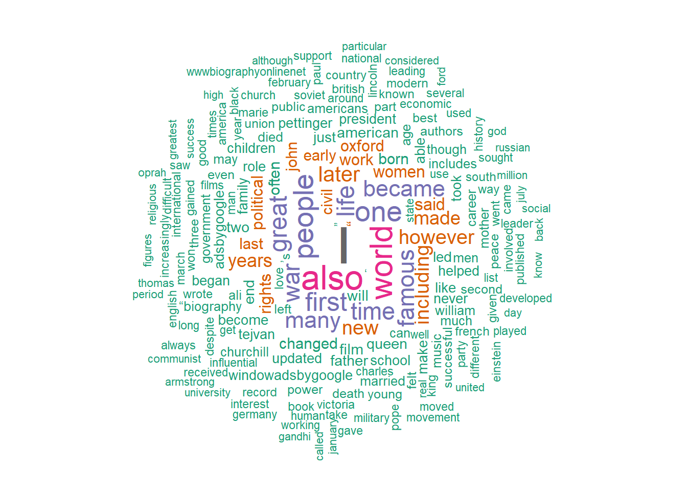

Code
library(quanteda)
library(tidyverse)
library(rvest)
library(stringr)
library(tidytext)
library(tm) # for stop words removal
library(ggplot2) # for graphs
library(tokenizers)Adithya Parupudi
October 11, 2022
Reading data from CSV file
New names:
Rows: 130 Columns: 3
── Column specification
──────────────────────────────────────────────────────── Delimiter: "," chr
(2): people_names_temp, temp3 dbl (1): ...1
ℹ Use `spec()` to retrieve the full column specification for this data. ℹ
Specify the column types or set `show_col_types = FALSE` to quiet this message.
• `` -> `...1`New names:
Rows: 116 Columns: 4
── Column specification
──────────────────────────────────────────────────────── Delimiter: "," chr
(3): people_names, links, content dbl (1): ...1
ℹ Use `spec()` to retrieve the full column specification for this data. ℹ
Specify the column types or set `show_col_types = FALSE` to quiet this message.
• `` -> `...1`Removed all stop words using the SnowBallC package.
Error in `filter()`:
! Problem while computing `..1 = !(words %in% stopwords(source =
"smart"))`.
Caused by error in `stopwords()`:
! unused argument (source = "smart")Attempts to remove stop words. DIfferent chunks of code.
# tokenised_data <- all_data %>%
# unnest_tokens(tokens,content)
# # arg 1 -> output columns
# # arg 2 - column from dataset which is going to be tokenized
# length(tokenised_data$tokens)
#
# data("stop_words")
#
# removed_stop_words <- tokenised_data %>%
# anti_join(stop_words, by=character())
#
#
# 155144
# summary(removed_stop_words)
removed_stop_words <- removeWords(all_data$content %>% tolower(), stopwords())Created a corpus, removed stop words, punctuation, numbers, whitespaces, converted to lowercase. Then created document term matrix and generated a word cloud
Warning in tm_map.SimpleCorpus(., removeNumbers): transformation drops documentsWarning in tm_map.SimpleCorpus(., removePunctuation): transformation drops
documentsWarning in tm_map.SimpleCorpus(., stripWhitespace): transformation drops
documentsWarning in tm_map.SimpleCorpus(create_corpus, content_transformer(tolower)):
transformation drops documentsWarning in tm_map.SimpleCorpus(create_corpus, removeWords,
stopwords("english")): transformation drops documentsLoading required package: RColorBrewer
Error in corpus(dataset$content): object 'dataset' not found Length Class Mode
1 2 PlainTextDocument list
2 2 PlainTextDocument list
3 2 PlainTextDocument list
4 2 PlainTextDocument list
5 2 PlainTextDocument list
6 2 PlainTextDocument list
7 2 PlainTextDocument list
8 2 PlainTextDocument list
9 2 PlainTextDocument list
10 2 PlainTextDocument list
11 2 PlainTextDocument list
12 2 PlainTextDocument list
13 2 PlainTextDocument list
14 2 PlainTextDocument list
15 2 PlainTextDocument list
16 2 PlainTextDocument list
17 2 PlainTextDocument list
18 2 PlainTextDocument list
19 2 PlainTextDocument list
20 2 PlainTextDocument list
21 2 PlainTextDocument list
22 2 PlainTextDocument list
23 2 PlainTextDocument list
24 2 PlainTextDocument list
25 2 PlainTextDocument list
26 2 PlainTextDocument list
27 2 PlainTextDocument list
28 2 PlainTextDocument list
29 2 PlainTextDocument list
30 2 PlainTextDocument list
31 2 PlainTextDocument list
32 2 PlainTextDocument list
33 2 PlainTextDocument list
34 2 PlainTextDocument list
35 2 PlainTextDocument list
36 2 PlainTextDocument list
37 2 PlainTextDocument list
38 2 PlainTextDocument list
39 2 PlainTextDocument list
40 2 PlainTextDocument list
41 2 PlainTextDocument list
42 2 PlainTextDocument list
43 2 PlainTextDocument list
44 2 PlainTextDocument list
45 2 PlainTextDocument list
46 2 PlainTextDocument list
47 2 PlainTextDocument list
48 2 PlainTextDocument list
49 2 PlainTextDocument list
50 2 PlainTextDocument list
51 2 PlainTextDocument list
52 2 PlainTextDocument list
53 2 PlainTextDocument list
54 2 PlainTextDocument list
55 2 PlainTextDocument list
56 2 PlainTextDocument list
57 2 PlainTextDocument list
58 2 PlainTextDocument list
59 2 PlainTextDocument list
60 2 PlainTextDocument list
61 2 PlainTextDocument list
62 2 PlainTextDocument list
63 2 PlainTextDocument list
64 2 PlainTextDocument list
65 2 PlainTextDocument list
66 2 PlainTextDocument list
67 2 PlainTextDocument list
68 2 PlainTextDocument list
69 2 PlainTextDocument list
70 2 PlainTextDocument list
71 2 PlainTextDocument list
72 2 PlainTextDocument list
73 2 PlainTextDocument list
74 2 PlainTextDocument list
75 2 PlainTextDocument list
76 2 PlainTextDocument list
77 2 PlainTextDocument list
78 2 PlainTextDocument list
79 2 PlainTextDocument list
80 2 PlainTextDocument list
81 2 PlainTextDocument list
82 2 PlainTextDocument list
83 2 PlainTextDocument list
84 2 PlainTextDocument list
85 2 PlainTextDocument list
86 2 PlainTextDocument list
87 2 PlainTextDocument list
88 2 PlainTextDocument list
89 2 PlainTextDocument list
90 2 PlainTextDocument list
91 2 PlainTextDocument list
92 2 PlainTextDocument list
93 2 PlainTextDocument list
94 2 PlainTextDocument list
95 2 PlainTextDocument list
96 2 PlainTextDocument list
97 2 PlainTextDocument list
98 2 PlainTextDocument list
99 2 PlainTextDocument list
100 2 PlainTextDocument list
101 2 PlainTextDocument list
102 2 PlainTextDocument list
103 2 PlainTextDocument list
104 2 PlainTextDocument list
105 2 PlainTextDocument list
106 2 PlainTextDocument list
107 2 PlainTextDocument list
108 2 PlainTextDocument list
109 2 PlainTextDocument list
110 2 PlainTextDocument list
111 2 PlainTextDocument list
112 2 PlainTextDocument list
113 2 PlainTextDocument list
114 2 PlainTextDocument list
115 2 PlainTextDocument list
116 2 PlainTextDocument listError: docvars() only works on corpus, dfm, readtext, tokens objects.---
title: "Blog Post 4 - Data Visualizations"
author: "Adithya Parupudi"
desription: "Data Visualizations - Word cloud etc"
date: "10/11/2022"
format:
html:
toc: true
code-fold: true
code-copy: true
code-tools: true
categories:
- Adithya Parupudi
---
```{r}
#| label: setup
#| warning: false
library(quanteda)
library(tidyverse)
library(rvest)
library(stringr)
library(tidytext)
library(tm) # for stop words removal
library(ggplot2) # for graphs
library(tokenizers)
```
Reading data from CSV file
```{r}
people_titles <- read_csv("PeopleTitles.csv")
all_data <- read_csv("100FamousPeople.csv")
```
Removed all stop words using the SnowBallC package.
```{r}
xyz <- all_data %>% unnest_tokens(words, content, token="words", strip_punct = TRUE)
# removed stop words using filter() function
xyz <- xyz %>% filter(!(words %in% stopwords(source = "smart")))
# for stemmimg
library(SnowballC)
new_xyz <- xyz %>%
mutate(stem = wordStem(words)) %>%
count(stem, sort = TRUE)
```
Attempts to remove stop words. DIfferent chunks of code.
```{r}
# tokenised_data <- all_data %>%
# unnest_tokens(tokens,content)
# # arg 1 -> output columns
# # arg 2 - column from dataset which is going to be tokenized
# length(tokenised_data$tokens)
#
# data("stop_words")
#
# removed_stop_words <- tokenised_data %>%
# anti_join(stop_words, by=character())
#
#
# 155144
# summary(removed_stop_words)
removed_stop_words <- removeWords(all_data$content %>% tolower(), stopwords())
```
Created a corpus, removed stop words, punctuation, numbers, whitespaces, converted to lowercase.
Then created document term matrix and generated a word cloud
```{r}
# only content picked
only_content <- all_data$content
# corpus created
create_corpus <- Corpus(VectorSource(only_content))
library(tm)
# cleaning data using tm library
create_corpus <- create_corpus %>%
tm_map(removeNumbers) %>%
tm_map(removePunctuation) %>%
tm_map(stripWhitespace)
create_corpus <- tm_map(create_corpus, content_transformer(tolower))
create_corpus <- tm_map(create_corpus, removeWords, stopwords("english"))
# creating document term matrix
dtm <- TermDocumentMatrix(create_corpus)
matrix <- as.matrix(dtm)
words <- sort(rowSums(matrix),decreasing=TRUE)
df <- data.frame(word = names(words),freq=words)
# generate word cloud
library(wordcloud)
set.seed(1234) # for reproducibility
wordcloud(words = df$word, freq = df$freq, min.freq = 1, max.words=200, random.order=FALSE, rot.per=0.35, colors=brewer.pal(8, "Dark2"))
create_corpus <- corpus(dataset$content)
corpus_summary <- summary(create_corpus)
corpus_summary
docvars(create_corpus)
# # get a list of years from each name
# all %>% html_nodes("ol li") %>% html_text2() %>%
# str_detect(.,"\\(.*>\)")
```